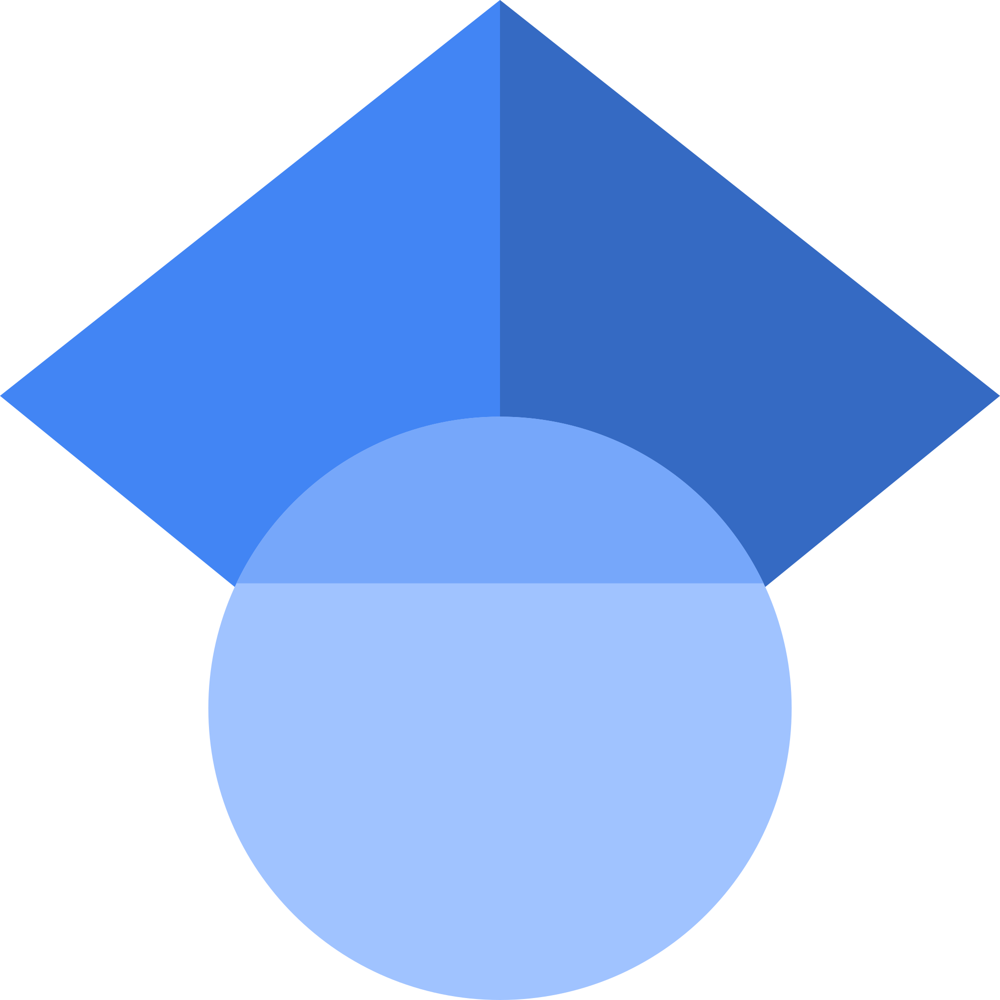
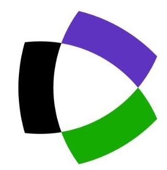

Investigación
Perfiles profesionales y de investigación online
| |
Inspire-HEP | Research Gate | ||
| ORCID |  |
Google Scholar | ||
| |
Scopus | |
arXiv | |
|  |
Web of Science |
También puedes pasarte por la pestaña de CV para más detalles sobre mis publicaciones, contribuciones a congresos y otras actividades relacionadas con la investigación
Líneas de investigación e intereses
Índice de proyectos
- Fundamentos geométricos de la gravedad
- Análisis de soluciones y geometrías particulares
- Gravedad métrico-afín
- Inestabilidades en teorías modificadas de gravedad
- Otros trabajos destacables
Fundamentos geométricos de la gravedad
Esta línea amplia abarca todos los aspectos relacionados con el modelado de la gravitación a nivel fundamental y se basa en explorar nuevas estructuras o aproximaciones para responder a algunas de las preguntas básicas del campo que continúan sin resolver.
Publicaciones en esta dirección
- D. Espín, A. Jiménez Cano, J. Olmedo, A. Torres Manso,
The Lanczos potential in the Plebanski paradigm of gravity,
Prepublicación (2026), arXiv: 2609.29434 [gr-qc]
- G. García-Moreno, A. Jiménez Cano,
Nonexistence of a parent theory for general relativity and unimodular gravity,
Phys. Rev. D 109, 104004 (2024), arXiv: 2309.06903 [gr-qc]
- A. Delhom, G. García-Moreno, M. Hohmann, A. Jiménez-Cano, T. S. Koivisto,
Bootstrapping gravity and its extension to metric-affine theories,
JCAP 12, 006 (2023), arXiv: 2211.13056 [gr-qc]
- A. Casado-Turrión, Á. de la Cruz-Dombriz, A. Jiménez-Cano, F. J. Maldonado Torralba,
Junction conditions in bi-scalar Poincaré gauge gravity,
JCAP 07, 023 (2023), arXiv: 2303.01206 [gr-qc]
- B. Janssen, A. Jiménez-Cano,
On the topological character of metric-affine Lovelock Lagrangians in critical dimensions,
Phys. Lett. B 798, 134996 (2019), arXiv: 1907.12100 [gr-qc]
Análisis de soluciones y geometrías particulares
Esta línea se centra en la construcción y el análisis de geometrías de interés gravitatorio, con especial atención a sus propiedades globales, estructura causal y topología. Incluye el estudio de agujeros negros toroidales y de espaciotiempos cosmológicos con curvatura espacial que cambia de signo y transiciones topológicas.
Trabajos en esta dirección
- G. García-Moreno, B. Janssen, A. Jiménez Cano, M. Mars, M. Sánchez, R. Vera,
Cosmological Spacetimes with Sign-Changing Spatial Curvature and Topological Transitions,
Prepublicación (2026), arXiv: 2603.09812 [gr-qc]
- C. Barceló, G. García-Moreno, A. Jiménez Cano,
Toroidal black holes in four dimensions,
Class. Quantum Grav. 42, 155015 (2025), arXiv: 2504.16790 [gr-qc]
Gravedad métrico-afín
Sector impar (bajo paridad) de MAGEl objetivo de esta línea es comprender el sector cuadrático en curvatura completo de MAG, incluyendo invariantes que violan paridad.
Publicaciones en esta dirección
- J. Beltrán Jiménez, A. Jiménez-Cano, Y. Obukhov
On parity-odd sector in metric-affine theories,
Europ. Phys. J C 83, 115 (2023), arXiv: 2210.01729 [gr-qc]
Inestabilidades en teorías modificadas de gravedad
Fondos fuertemente acopladosEl objetivo de esta línea es avanzar en el estudio de las implicaciones del llamado 'strong coupling problem' en gravedad modificada. El problema puede detectarse de varias maneras y aún está por clarificar las relaciones entre estas (si son equivalentes o alguna es más general que otra). En algunos fondos particulares de gravedad teleparalela se espera poder evitar este problema, convirtiéndose así en soluciones (al menos de acuerdo a este tipo de inestabilidad) físicamente viables.
Publicaciones en esta dirección
- J. Beltrán Jiménez, A. Jiménez-Cano,
On the strong coupling of Einsteinian Cubic Gravity and its generalisations,
JCAP 01, 069 (2021), arXiv: 2009.08197 [gr-qc]
El objetivo de esta línea es comprender cuan restrictivas son las condiciones de estabilidad in gravedad métrico-afín. Primero nos hemos centrado en el caso vectorial, i.e. hemos asumido que se propaga al menos uno de los spin-1 contenidos en las partes irreducibles vectoriales de la torsión y la nometricidad. Recientemente, hemos comprobado que esto es suficiente como para reducir de 16 a 5 el número de parámetros en el sector cuadrático de curvatura.
Publicaciones en esta dirección
- A. Jiménez-Cano, F. J. Maldonado Torralba
Vector stability in quadratic metric-affine theories,
JCAP 09, 044 (2022), arXiv: 2205.05674 [gr-qc]
Esta línea busca explorar teorías de gravedad estables dentro del marco teleparalelo, basado en geometrías con torsión y/o no metricidad, pero sin curvatura.
Publicaciones en esta dirección
- A. G. Bello-Morales, J. Beltrán Jiménez, A. Jiménez Cano, T. S. Koivisto, A. L. Maroto,
A class of ghost-free theories in symmetric teleparallel geometry,
JHEP 12, 146 (2024), arXiv: 2406.19355 [gr-qc]
- J. Beltrán Jiménez, L. Heisenberg, D. Iosifidis, A. Jiménez-Cano, T. S. Koivisto,
General Teleparallel Quadratic Gravity,
Phys. Lett. B 805, 135422 (2020), arXiv: 1909.09045 [gr-qc]
Otros trabajos destacables
- J. Arrechea, A. Delhom, A. Jiménez-Cano,
Inconsistencies in four-dimensional Einstein-Gauss-Bonnet gravity,
Chinese Phys. C 45, 013107 (2021), arXiv: 2004.12998 [gr-qc]
- J. Arrechea, A. Delhom, A. Jiménez-Cano,
Comment on 'Einstein-Gauss-Bonnet Gravity in four-dimensional space-time',
PRL 125, 149002 (2020), arXiv: 2009.10715 [gr-qc]